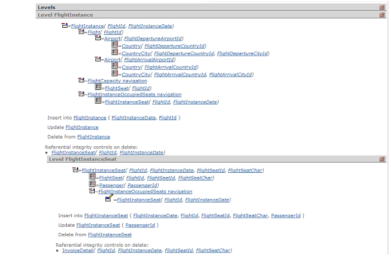

Helps in analyzing the Transaction. It is automatically generated for each Transaction specified.
The specifying proccess generates the following information:
-
Error and warning messages.
-
Navigation Diagram for Insert/Update Transaction access functions.
-
Navigation Diagram for non-redundant formulas.
And shows the following Navigation report to help in analyzing the Transaction's performance. It displays all Transaction Levels.
-
Means that the table will be accessed only once, generally for integrity check or data retrieval.
-
The table's access key is also specified. Access keys are specified indicating the list of attributes in the foreign key and not those in the index (i.e. if the foreign key is made of subtypes, the list includes the subtypes and not the supertypes).
-
Refers to a Transaction Level indicating that its table will be accessed more than once: to Insert, Update, Delete or Browse data.
Each Level Contains Information On:
-
Base Table Access Keys. Access Key (in this case, Primary Key) is specified displaying the list of Attributes that define the index.
-
Actions that may be carried out: INSERT, UPDATE, DELETE
-
Attributes will be listed along with the mode that will update them.
-
Navigation to evaluate non-redundant formulas belonging to this Level.
|